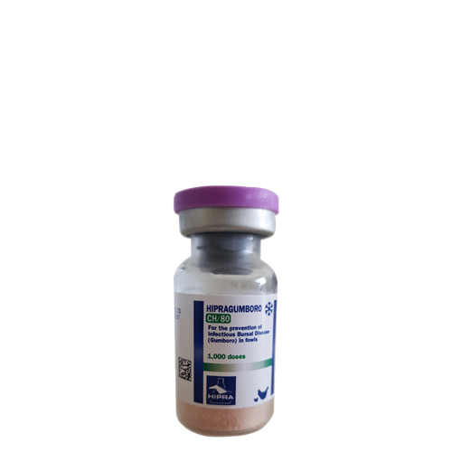

واکسن زنده با حدت متوسط و کلون شده علیه بیماری گامبورو، هیپرا
📝ترکیب:
واکسن زنده تخفیف حدت یافته و کلون شده ویروس بیماری گامبورو که هر دز آن حاوی ⁵∙TCID₅₀ 10³∙⁵_10⁶ می باشد
📝ویژگی فنی:
واکسن هیپراگامبورو CH۸۰ یک واکسن بسیار ایمیونوژنیک میباشد. سوش Winterfield 2512 , CH80، میباشد که بعد از پروسه تخفیف حدت دادن و کلونینگ جهت سوش واکسن انتخاب گردیده، دلیل انتخاب این سوش ظرفیت بالای آن جهت تحریک سیستم ایمنی پرندگان میباشد. واکسن هیپرا گامبورو CH۸۰ باعث سرکوب ایمنی در پرندگان نمیشود، این واکسن برای جوجهها سرکوب کننده ایمنی (ایمنوساپرسیو) نمیباشد و باعث تخلیه ملایم لمفوئیدی میشود. میزان آنتیژن (تعداد پارتیکل ویروسی)، کیفیت سوش و عدم سرکوب ایمنی باعث شده که این واکسن انتخاب اول جهت کنترل بیماری گامبورو در گله های طیور باشد..
📝موارد مصرف:
جهت پیشگیری از بیماری گامبورو در گلههای گوشتی، تخمگذار و مادر.
📝مقدار مصرف:
یک دز برای هر پرنده (گوشتی، تخمگذارو مادر)
زمان مناسب جهت واکسیناسیون میبایست بر حسب میزان آنتی بادی مادری اندازه گیری شده بوسیله آزمایش الیزا و توسط فرمولهای کونهوون (Kouwenhoven) و دونتر (Deventer) در جوجههای یک روزه محاسبه گردد.
هرگونه بر نامه واکسیناسیون طبق نظر دامپزشک منطقه و بر اساس شرایط گله و منطقه طراحی گردد.
از تجویز واکسن کمتر از دزاژ (مقدار) توصیه شده جدا خودداری شود و هر پرنده باید یک دز واکسن را حتما دریافت نماید.
📝روش مصرف:
به صورت قطره بینی، چشمی، اسپری و آشامیدنی. به طور کلی روش آشامیدنی نسبت به سایر روشها ارجحیت دارد.
◽️روش قطره بینی-چشمی:
تزریق ۱۰ میلی لیتر حلال (آب مقطر) به داخل ویال، سپس جهت حل شدن قرص لیوفیلیزه ویال واکسن را به آرامی تکان دهید. چکاندن یک قطره واکسن (هر پرنده 0.03 میلی لیتر) در چشم و یا بینی هر پرنده با استفاده از قطره چکان استاندارد (۳۰ میلی لیتر برای هر ۱۰۰۰ دز)
◽️روش آشامیدنی :
همیشه ویال واکسن را در زیر آب بازنموده در ابتدا از میزان اندکی آب جهت حل شدن قرص لیوفیلیزه استفاده شود بعد از حل شدن قرص لیوفیلیزه آن را در ظرف حاوی میزان مناسب آب جهت مصرف ۱ الی ۲ ساعت توسط طیور حل نموده. هرگز از آب حاوی اسیدی فایرها استفاده نگرد تنها از آب تمیز، تازه و فاقد کلر و املاح استفاده گردد.
◽️روش اسپری:
جهت انجام این روش در ابتدا می بایست دستگاه اسپری HIPRA WILMA TIMER را به لحاظ انجام اسپری مناسب و مقدار آب مورد نیاز چک نمود. همیشه ویال واکسن در زیر آب باز گردد. از میزان کمی آب جهت حل نمودن قرص لیوفیلیزه استفاده نموده سپس بعد از حل شدن قرص لیوفیلیزه آن را در داخل آب مورد نیاز جهت مصرف حل نموده. هرگز از آب حاوی اسیدی فایرها استفاده نگردد تنها از آب تمیز، تازه و فاقد کلر و املاح استفاده گردد.
برای مرحله اول واکسیناسیون در سنین پایین استفاده از اسپری با قطرات درشت توصیه می گردد. برای مراحل بعدی (سنین بالاتر) می توان از اسپری با قطرات ریز طبق توصیه کارخانه سازنده دستگاه اسپری استفاده نمود. هنگام استفاده از واکسن به روش اسپری می بایست از ماسک محافظت کننده عینک استفاده نمود.
📝دوره منع مصرف:
ندارد
📝شرایط نگهداری:
واکسن در دمای ۸-۲ درجه سانتی گراد و دور از نور آفتاب نگهداری شود.
📝بسته بندی:
ویالهای ۲۵۰۰ دزی (هر ۱۰ ویال داخل یک بسته).
📝سازنده:
شرکت هیپرا اسپانیا